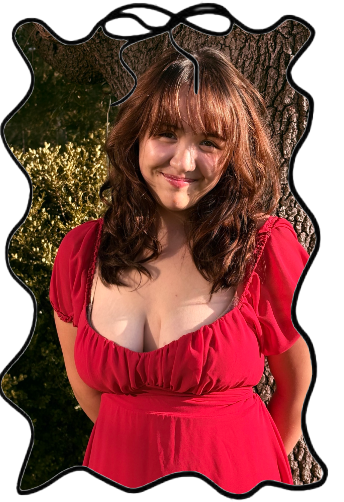

Here’s my introduction: Hi! I’m Shirley(yes, like Shirley temple🙄),
a creative and curious person who loves exploring new ideas, whether
it’s through research, law, or even singing. I’m passionate about
learning, sharing my energy with others, and finding joy in every
little adventure along the way.